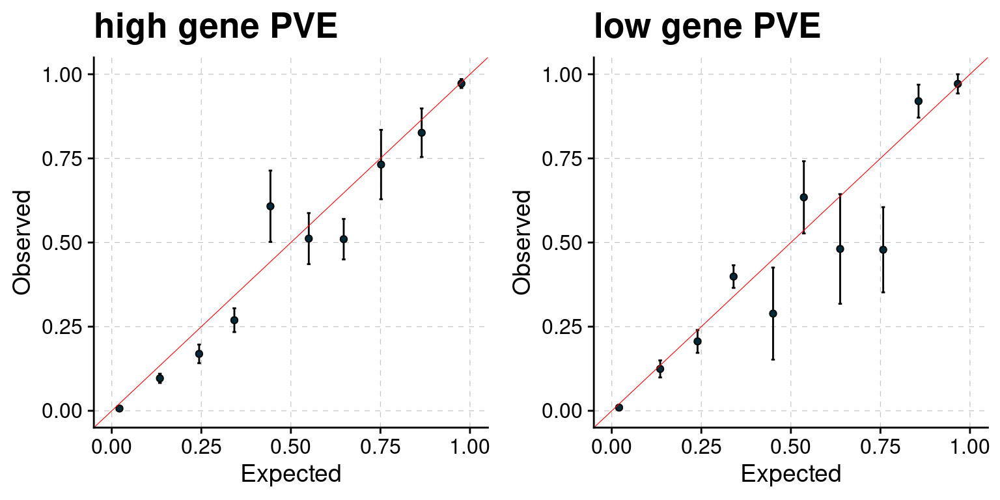
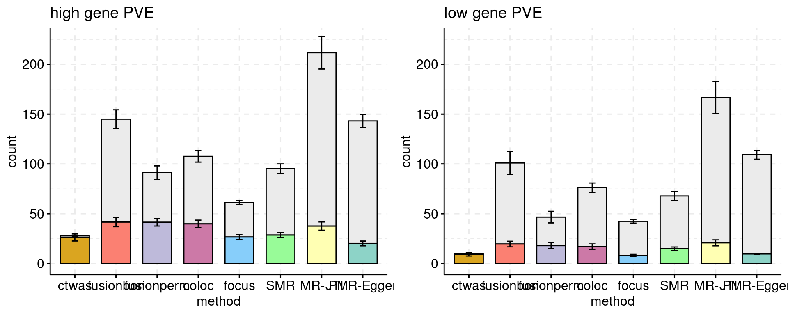
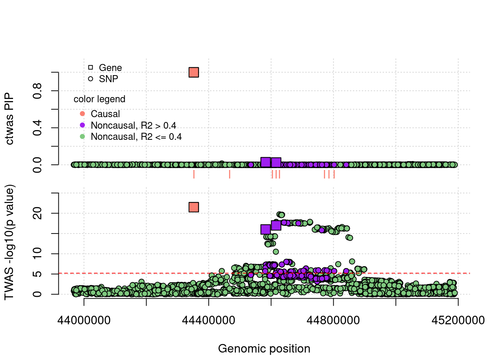
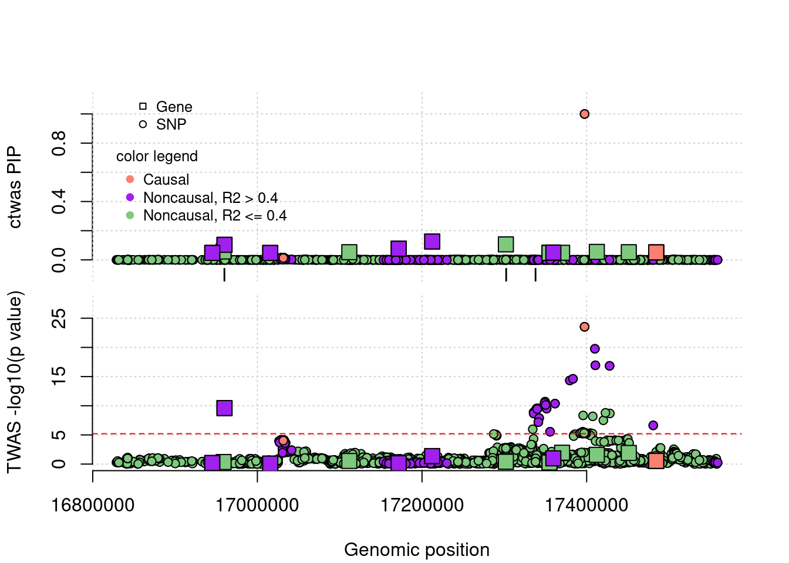
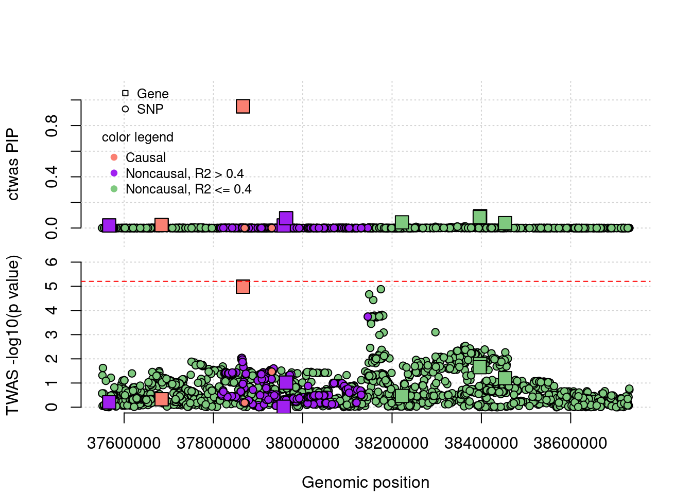
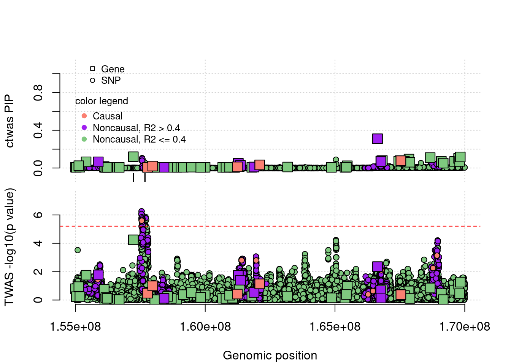
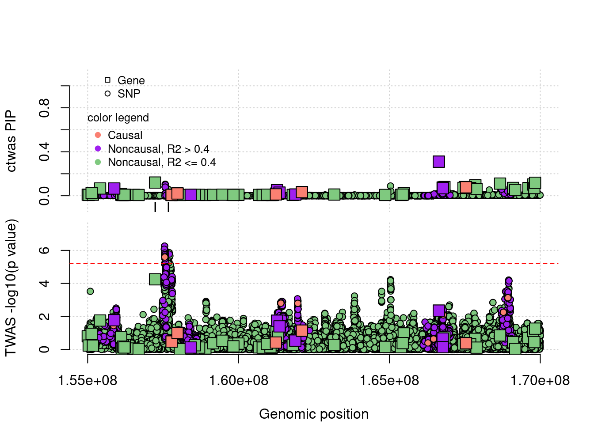

Paper figures (Simulation)
Last updated: 2023-06-17
Checks: 6 1
Knit directory: causal-TWAS/
This reproducible R Markdown analysis was created with workflowr (version 1.6.2). The Checks tab describes the reproducibility checks that were applied when the results were created. The Past versions tab lists the development history.
Great! Since the R Markdown file has been committed to the Git repository, you know the exact version of the code that produced these results.
Great job! The global environment was empty. Objects defined in the global environment can affect the analysis in your R Markdown file in unknown ways. For reproduciblity it’s best to always run the code in an empty environment.
The command set.seed(20191103) was run prior to running
the code in the R Markdown file. Setting a seed ensures that any results
that rely on randomness, e.g. subsampling or permutations, are
reproducible.
Great job! Recording the operating system, R version, and package versions is critical for reproducibility.
Nice! There were no cached chunks for this analysis, so you can be confident that you successfully produced the results during this run.
Using absolute paths to the files within your workflowr project makes it difficult for you and others to run your code on a different machine. Change the absolute path(s) below to the suggested relative path(s) to make your code more reproducible.
| absolute | relative |
|---|---|
| ~/causalTWAS/causal-TWAS/analysis/summarize_basic_plots.R | analysis/summarize_basic_plots.R |
| ~/causalTWAS/causal-TWAS/analysis/summarize_ctwas_plots.R | analysis/summarize_ctwas_plots.R |
| ~/causalTWAS/causal-TWAS/analysis/ld.R | analysis/ld.R |
Great! You are using Git for version control. Tracking code development and connecting the code version to the results is critical for reproducibility.
The results in this page were generated with repository version 9125a8a. See the Past versions tab to see a history of the changes made to the R Markdown and HTML files.
Note that you need to be careful to ensure that all relevant files for
the analysis have been committed to Git prior to generating the results
(you can use wflow_publish or
wflow_git_commit). workflowr only checks the R Markdown
file, but you know if there are other scripts or data files that it
depends on. Below is the status of the Git repository when the results
were generated:
Ignored files:
Ignored: .Rhistory
Ignored: .Rproj.user/
Ignored: .ipynb_checkpoints/
Ignored: analysis/.ipynb_checkpoints/
Ignored: code/.ipynb_checkpoints/
Ignored: code/before_package/.ipynb_checkpoints/
Ignored: code/workflow/.ipynb_checkpoints/
Ignored: code/workflow/.snakemake/
Ignored: code/workflow/logs/.snakemake/
Ignored: data/
Ignored: output/.ipynb_checkpoints/
Untracked files:
Untracked: analysis/figure/
Untracked: analysis/temp-param.pdf
Untracked: code/workflow/logs/MRLocus.gwasname=ukb-s80.45-adi_simu10-2,mrlocus_batch=14,weightname=Adipose_Subcutaneous.cluster28002335.err
Untracked: code/workflow/logs/MRLocus.gwasname=ukb-s80.45-adi_simu10-2,mrlocus_batch=14,weightname=Adipose_Subcutaneous.cluster28002335.out
Untracked: code/workflow/logs/MRLocus.gwasname=ukb-s80.45-adi_simu10-2,mrlocus_batch=18,weightname=Adipose_Subcutaneous.cluster28002336.err
Untracked: code/workflow/logs/MRLocus.gwasname=ukb-s80.45-adi_simu10-2,mrlocus_batch=18,weightname=Adipose_Subcutaneous.cluster28002336.out
Untracked: code/workflow/logs/MRLocus.gwasname=ukb-s80.45-adi_simu10-2,mrlocus_batch=8,weightname=Adipose_Subcutaneous.cluster28002338.err
Untracked: code/workflow/logs/MRLocus.gwasname=ukb-s80.45-adi_simu10-2,mrlocus_batch=8,weightname=Adipose_Subcutaneous.cluster28002338.out
Untracked: code/workflow/logs/MRLocus.gwasname=ukb-s80.45-adi_simu10-3,mrlocus_batch=24,weightname=Adipose_Subcutaneous.cluster28002334.err
Untracked: code/workflow/logs/MRLocus.gwasname=ukb-s80.45-adi_simu10-3,mrlocus_batch=24,weightname=Adipose_Subcutaneous.cluster28002334.out
Untracked: code/workflow/logs/MRLocus.gwasname=ukb-s80.45-adi_simu10-3,mrlocus_batch=28,weightname=Adipose_Subcutaneous.cluster28002339.err
Untracked: code/workflow/logs/MRLocus.gwasname=ukb-s80.45-adi_simu10-3,mrlocus_batch=28,weightname=Adipose_Subcutaneous.cluster28002339.out
Untracked: code/workflow/logs/MRLocus.gwasname=ukb-s80.45-adi_simu10-4,mrlocus_batch=12,weightname=Adipose_Subcutaneous.cluster28002340.err
Untracked: code/workflow/logs/MRLocus.gwasname=ukb-s80.45-adi_simu10-4,mrlocus_batch=12,weightname=Adipose_Subcutaneous.cluster28002340.out
Untracked: code/workflow/logs/MRLocus.gwasname=ukb-s80.45-adi_simu10-4,mrlocus_batch=14,weightname=Adipose_Subcutaneous.cluster28002341.err
Untracked: code/workflow/logs/MRLocus.gwasname=ukb-s80.45-adi_simu10-4,mrlocus_batch=14,weightname=Adipose_Subcutaneous.cluster28002341.out
Untracked: code/workflow/logs/MRLocus.gwasname=ukb-s80.45-adi_simu10-4,mrlocus_batch=24,weightname=Adipose_Subcutaneous.cluster28002343.err
Untracked: code/workflow/logs/MRLocus.gwasname=ukb-s80.45-adi_simu10-4,mrlocus_batch=24,weightname=Adipose_Subcutaneous.cluster28002343.out
Untracked: code/workflow/logs/MRLocus.gwasname=ukb-s80.45-adi_simu4-1,mrlocus_batch=21,weightname=Adipose_Subcutaneous.cluster28002342.err
Untracked: code/workflow/logs/MRLocus.gwasname=ukb-s80.45-adi_simu4-1,mrlocus_batch=21,weightname=Adipose_Subcutaneous.cluster28002342.out
Untracked: code/workflow/logs/MRLocus.gwasname=ukb-s80.45-adi_simu4-4,mrlocus_batch=23,weightname=Adipose_Subcutaneous.cluster28002337.err
Untracked: code/workflow/logs/MRLocus.gwasname=ukb-s80.45-adi_simu4-4,mrlocus_batch=23,weightname=Adipose_Subcutaneous.cluster28002337.out
Untracked: temp.regionlist.RDS
Untracked: temp.regions.txt
Untracked: temp.susieIrss.txt
Untracked: temp.temp.susieIrssres.Rd
Untracked: temp_reg.txt
Unstaged changes:
Modified: analysis/Paper_Suppl_figures_simulation.Rmd
Modified: analysis/simulation-ctwas-ukbWG-gtex.adipose_s80.45_03222023.Rmd
Modified: code/run_MRLocus_wc.R
Modified: code/run_MRLocus_wc_bkup.R
Deleted: code/workflow/logs/MRLocus.gwasname=ukb-s80.45-adi_simu10-2,mrlocus_batch=24,weightname=Adipose_Subcutaneous.cluster27426155.err
Deleted: code/workflow/logs/MRLocus.gwasname=ukb-s80.45-adi_simu10-2,mrlocus_batch=24,weightname=Adipose_Subcutaneous.cluster27426155.out
Note that any generated files, e.g. HTML, png, CSS, etc., are not included in this status report because it is ok for generated content to have uncommitted changes.
These are the previous versions of the repository in which changes were
made to the R Markdown
(analysis/Paper_figures_simulation.Rmd) and HTML
(docs/Paper_figures_simulation.html) files. If you’ve
configured a remote Git repository (see ?wflow_git_remote),
click on the hyperlinks in the table below to view the files as they
were in that past version.
| File | Version | Author | Date | Message |
|---|---|---|---|---|
| Rmd | 972fe6d | simingz | 2023-06-05 | low PVE simulation bug fix |
| Rmd | de95a10 | simingz | 2023-05-08 | 110k simulation |
| Rmd | c73dec5 | simingz | 2023-03-22 | revision |
| Rmd | 1472dd3 | simingz | 2021-08-09 | paper figure, examples rerun ctwas with full SNPs |
| html | 1472dd3 | simingz | 2021-08-09 | paper figure, examples rerun ctwas with full SNPs |
| Rmd | 8521449 | simingz | 2021-08-04 | update simulation figure |
| html | 8521449 | simingz | 2021-08-04 | update simulation figure |
| Rmd | ca90eff | simingz | 2021-07-31 | simulation paper figures |
| html | ca90eff | simingz | 2021-07-31 | simulation paper figures |
library(ctwas)
library(data.table)
source("~/causalTWAS/causal-TWAS/analysis/summarize_basic_plots.R")
Attaching package: 'ggpubr'The following object is masked from 'package:cowplot':
get_legendsource("~/causalTWAS/causal-TWAS/analysis/summarize_ctwas_plots.R")
Attaching package: 'plyr'The following object is masked from 'package:ggpubr':
mutatesource("~/causalTWAS/causal-TWAS/analysis/ld.R")
outputdir = "/home/simingz/causalTWAS/simulations/simulation_ctwas_rss_20210416/"
comparedir = "/home/simingz/causalTWAS/simulations/simulation_ctwas_rss_20210416_compare/"
runtag = "ukb-s80.45-adi"
configtag = 1
pgenfn = "/home/simingz/causalTWAS/ukbiobank/ukb_pgen_s80.45/ukb-s80.45_pgenfs.txt"
ld_pgenfn = "/home/simingz/causalTWAS/ukbiobank/ukb_pgen_s80.45/ukb-s80.45.2_pgenfs.txt"
exprfn = "/home/simingz/causalTWAS/simulations/simulation_ctwas_rss_20210416//ukb-s80.45-adi.expr.txt"
weightf = "/project2/mstephens/causalTWAS/fusion_weights/Adipose_Subcutaneous.pos"
ld_pgenfs <- read.table(ld_pgenfn, header = F, stringsAsFactors = F)[,1]
pgenfs <- read.table(pgenfn, header = F, stringsAsFactors = F)[,1]
pvarfs <- sapply(pgenfs, prep_pvar, outputdir = outputdir)
pgens <- lapply(1:length(pgenfs), function(x) prep_pgen(pgenf = pgenfs[x],pvarf = pvarfs[x]))
exprfs <- read.table(exprfn, header = F, stringsAsFactors = F)[,1]
exprvarfs <- sapply(exprfs, prep_exprvar)
n <- pgenlibr::GetRawSampleCt(pgens[[1]])
p <- sum(unlist(lapply(pgens, pgenlibr::GetVariantCt))) # number of SNPs
J <- 8021 # number of genes
weights <- as.data.frame(fread(weightf, header = T))
weights$ENSEMBL_ID <- sapply(weights$WGT, function(x){unlist(strsplit(unlist(strsplit(x,"/"))[2], "[.]"))[2]})
colorsall <- c("#7fc97f", "#beaed4", "#fdc086")Parameter estimation
Parameter vs. true value
In our simulations, the SNP PVE is always set to 0.5 in different settings. The gene PVE is shown as in figures. The number of causal SNPs is always set to 2.5e * \(10^{-4}\). In the two settings shown below, number of samples is 45k. For other details about our simulation settings and procedures, please see here. Note, setting 1 is the high power setting and setting 2 is a low power setting, I will change the setting names manually later.
Each plot show one parameter: pi.gene, pi.gene/pi.SNP (enrichment), effectsize.gene, PVE.gene. Horizontal bar shows mean true values across the 5 simulations with similar setting parameters. The results by ctwas for each simulation is shown by dots.
require(latex2exp)Loading required package: latex2expplot_single <- function(mtxlist, truecol, estcol, xlabels = c("setting 1", "setting 2"), ...){
truth <- do.call(rbind, lapply(1:length(mtxlist), function(x) cbind(x, mean(mtxlist[[x]][, truecol]))))
est <- do.call(rbind, lapply(1:length(mtxlist), function(x) cbind(x, mtxlist[[x]][, estcol])))
col = est[,1]
est[,1] <- jitter(est[,1])
plot(est, pch = 19, xaxt = "n", xlab="" ,frame.plot=FALSE, col = colorsall[col], ...)
axis(side=1, at=1:2, labels = xlabels, tick = F)
#text(x=1:length(mtxlist), 0, labels = paste0("temp",1:length(mtxlist)), xpd = T, pos =1)
for (t in 1:nrow(truth)){
row <- truth[t,]
segments(row[1]-0.2, row[2] , row[1] + 0.2, row[2],
col = colorsall[t], lty = par("lty"), lwd = 2, xpd = FALSE)
}
grid()
}
get_params <- function(configtag, runtag, simutaglist){
mtxlist <- list()
for (group in 1:length(simutaglist)){
simutags <- simutaglist[[group]]
source(paste0(outputdir, "config", configtag, ".R"))
phenofs <- paste0(outputdir, runtag, "_simu", simutags, "-pheno.Rd")
susieIfs <- paste0(outputdir, runtag, "_simu", simutags, "_config", configtag, ".s2.susieIrssres.Rd")
susieIfs2 <- paste0(outputdir, runtag, "_simu",simutags, "_config", configtag,".s2.susieIrss.txt")
mtxlist[[group]] <- show_param(phenofs, susieIfs, susieIfs2, thin = thin)
}
return(mtxlist)
}
plot_par <- function(mtxlist){
par(mfrow=c(1,4))
plot_single(mtxlist, truecol = "pi1.gene_truth", estcol = "pi1.gene_est", ylab ="gene pi1", ylim = c(0,0.02), xlim = c(0.8,2.4))
plot_single(mtxlist, truecol = "enrich_truth", estcol = "enrich_est",ylab ="gene enrichment", ylim = c(0,120), xlim = c(0.8,2.4) )
plot_single(mtxlist, truecol = "sigma.gene_truth", estcol = "sigma.gene_est", ylab = "gene effect size", ylim = c(0.01, 0.03), xlim = c(0.8,2.4))
plot_single(mtxlist, truecol = "PVE.gene_truth", estcol = "PVE.gene_est", ylab ="gene PVE", ylim = c(0, 0.1), xlim = c(0.8,2.4))
}Parameters Figure
simutaglist = list(paste(4, 1:5, sep = "-"), paste(10, 1:5, sep="-"))
mtxlist <- get_params(configtag, runtag, simutaglist)
plot_par(mtxlist)
| Version | Author | Date |
|---|---|---|
| ca90eff | simingz | 2021-07-31 |
Supplementary-parameters
plot_par_snps <- function(mtxlist){
par(mfrow=c(1,3))
plot_single(mtxlist, truecol = "pi1.SNP_truth", estcol = "pi1.SNP_est", xlabels = c("high gene PVE", "low gene PVE"), ylab =TeX('Percent causal, $\\pi_V$'), ylim = c(0,0.0005), xlim = c(0.8,2.4))
plot_single(mtxlist, truecol = "sigma.SNP_truth", estcol = "sigma.SNP_est",xlabels = c("high gene PVE", "low gene PVE"), ylab = "Variant effect size", ylim = c(0.01, 0.03), xlim = c(0.8,2.4))
plot_single(mtxlist, truecol = "PVE.SNP_truth", estcol = "PVE.SNP_est",xlabels = c("high gene PVE", "low gene PVE"), ylab ="Variant PVE", ylim = c(0, 0.8), xlim = c(0.8,2.4))
}
plot_par_snps(mtxlist)PIP calibration
PIP plot under different settings.
plot_PIP <- function(configtag, runtag, simutags, ...){
phenofs <- paste0(outputdir, "ukb-s80.45-adi", "_simu", simutags, "-pheno.Rd")
susieIfs <- paste0(outputdir, runtag, "_simu",simutags, "_config", configtag,".susieIrss.txt")
f1 <- caliPIP_plot(phenofs, susieIfs, ...)
return(f1)
}simutaglist = list(paste(4, 1:5, sep = "-"), paste(10, 1:5, sep="-"))
f1 <- plot_PIP(configtag, runtag, simutaglist[[1]], main = "high gene PVE")
f2 <- plot_PIP(configtag, runtag, simutaglist[[2]], main = "low gene PVE")
gridExtra::grid.arrange(f1, f2, ncol =2)
Supplementary PIP plot
simutaglist = lapply(c(1:3,5:9), function(x) paste(x, 1:5, sep ="-"))
mtxlist <- get_params(configtag, runtag, simutaglist)
simutaglist = c(list(paste(1, c(1,2,5), sep = "-")),
lapply(c(2,3,5,6,7,8,9), function(x) paste(x, 1:5, sep ="-")))
pdf(file = "temp3.pdf", height = 10, width =10)
plotlist <- list()
for (i in 1:length(simutaglist)){
plotlist[[i]] <- plot_PIP(configtag, runtag, simutaglist[[i]], main =
TeX(sprintf("\\overset{$\\pi_G$= %s, $PVE_G$ = %s;}{$\\pi_V$= %s, $PVE_G$ = %s}",
signif(mean(mtxlist[[i]][,"pi1.gene_truth"]), digits=2),
signif(mean(mtxlist[[i]][,"PVE.gene_truth"]), digits=2),
signif(mean(mtxlist[[i]][,"pi1.SNP_truth"]), digits=2),
signif(mean(mtxlist[[i]][,"PVE.SNP_truth"]), digits=2))))
}
gridExtra::grid.arrange(plotlist[[1]], plotlist[[2]],
plotlist[[3]], plotlist[[4]],
plotlist[[5]], plotlist[[6]],
plotlist[[7]], plotlist[[8]],ncol = 3)
dev.off()Comparison with other methods
Bar plot: each bar shows the number of genes, colored by causal status. Use a different color for each method. The method and cut off values: * ctwas: PIP 0.8 * FUSION fdr: 0.05 * FUSION bonferroni: 0.05 * FUSION permutation fdr: 0.05 * COLOC PP4: 0.8 * FOCUS PIP: 0.8 * SMR FDR: 0.05, updated using ensemble ID * SMR HEIDI: HEIDI p > 0.05, SMR FDR < 0.05, updated using ensemble ID
Multiple bar plots, different settings: high gene power and low gene power.
get_ncausal_df <- function(pfiles, cau, cut = 0.8, useFDP= F,
method = c("ctwas", "fusionfdr", "fusionbon","fusionperm", "coloc", "focus", "smr", "smrheidi")){
df <- NULL
for (i in 1:length(pfiles)) {
res <- fread(pfiles[i], header = T)
# res <- res[complete.cases(res),]
if (method == "ctwas"){
res <- data.frame(res[res$type =="gene", ])
res$ifcausal <- ifelse(res$id %in% cau[[i]], 1, 0)
res <- res[order(res$susie_pip, decreasing = T ),]
res$FDP <- 1-cumsum(res$ifcausal)/(1:nrow(res))
if (isTRUE(useFDP)){ res <- res[res$FDP < cut,]} else {
res <- res[res$susie_pip > cut,]}
} else if (method == "fusionfdr"){
res$FDR <- p.adjust(res$TWAS.P, method = "fdr")
res <- res[order(res$FDR, decreasing = F),]
res$ifcausal <- ifelse(res$ID %in% cau[[i]], 1, 0)
res$FDP <- 1-cumsum(res$ifcausal)/(1:nrow(res))
if (isTRUE(useFDP)){ res <- res[res$FDP < cut,]} else {
res <- res[res$FDR < cut,]}
} else if (method == "fusionbon"){
res$FDR <- p.adjust(res$TWAS.P, method = "bonferroni")
res <- res[order(res$FDR, decreasing = F),]
res$ifcausal <- ifelse(res$ID %in% cau[[i]], 1, 0)
res$FDP <- 1-cumsum(res$ifcausal)/(1:nrow(res))
if (isTRUE(useFDP)){ res <- res[res$FDP < cut,]} else {
res <- res[res$FDR < cut,]
}
} else if (method == "fusionperm"){
res <- res[res$PERM.N!=0,]
res$FDR <- p.adjust(res$PERM.PV, method = "fdr")
res <- res[order(res$FDR, decreasing = F),]
res$ifcausal <- ifelse(res$ID %in% cau[[i]], 1, 0)
res$FDP <- 1-cumsum(res$ifcausal)/(1:nrow(res))
if (isTRUE(useFDP)){ res <- res[res$FDP < cut,]} else {
res <- res[res$FDR < cut,]
}
} else if (method == "coloc"){
res <- res[!is.na(res$COLOC.PP4),]
res <- res[order(res$COLOC.PP4, decreasing = T),]
res$ifcausal <- ifelse(res$ID %in% cau[[i]], 1, 0)
res$FDP <- 1-cumsum(res$ifcausal)/(1:nrow(res))
if (isTRUE(useFDP)){ res <- res[res$FDP < cut,]} else {
res <- res[res$COLOC.PP4 > cut,]
}
} else if (method == "focus"){
res <- res[res$mol_name != "NULL",]
res$ifcausal <- ifelse(res$mol_name %in% cau[[i]], 1, 0)
res <- res[order(res$pip, decreasing = T),]
res$FDP <- 1-cumsum(res$ifcausal)/(1:nrow(res))
if (isTRUE(useFDP)){ res <- res[res$FDP < cut,]} else {
res <- res[res$pip > cut, ]
}
} else if (method == "SMR"){
res <- as.data.frame(res)
res$probeID <- sapply(res$Gene, function(x){unlist(strsplit(x, "[.]"))[1]})
res <- res[res$probeID %in% weights$ENSEMBL_ID,]
res <- res[sapply(res$p_HEIDI > 0.05, isTRUE),]
res$FDR <- p.adjust(res$p_SMR, method = "fdr")
res$ifcausal <- ifelse(res$probeID %in% cau[[i]], 1, 0)
res <- res[order(res$FDR, decreasing = F),]
res$FDP <- 1-cumsum(res$ifcausal)/(1:nrow(res))
if (isTRUE(useFDP)){ res <- res[res$FDP < cut,]} else {
res <- res[res$FDR < cut,]
}
} else if (method == "MR-JTI"){
res$ifcausal <- ifelse(res$variable %in% cau[[i]], 1, 0)
res <- res[order(abs(res$beta), decreasing = T),]
res$FDP <- 1-cumsum(res$ifcausal)/(1:nrow(res))
if (isTRUE(useFDP)){ res <- res[res$FDP < cut,]} else {
res <- res[res$CI_significance=="sig",]
}
} else if (method == "PMR-Egger"){
res <- as.data.frame(res)
res$ifcausal <- ifelse(res$gene_id %in% cau[[i]], 1, 0)
res <- res[!is.na(res$causal_pvalue), ]
res <- res[order(res$causal_pvalue, decreasing = F),]
res$FDP <- 1-cumsum(res$ifcausal)/(1:nrow(res))
if (isTRUE(useFDP)){ res <- res[res$FDP < cut,]} else {
res <- res[sapply(res$causal_pvalue < cut/sum(!is.na(res$causal_pvalue)), isTRUE),]
}
} else{
stop("no such method")
}
df.rt <- rbind(c(nrow(res[res$ifcausal == 0, ]), 0, i),
c(nrow(res[res$ifcausal == 1, ]), 1, i))
df <- rbind(df, df.rt)
}
colnames(df) <- c("count", "ifcausal", "runtag")
df <- data.frame(df)
df$method <- method
return(df)
}
plot_ncausal <- function(configtag, runtag, simutags, colors, ...){
phenofs <- paste0(outputdir, runtag, "_simu", simutags, "-pheno.Rd")
cau <- lapply(phenofs, function(x) {load(x);get_causal_id(phenores)})
cau_ensembl <- cau
for (i in 1:length(cau_ensembl)){
cau_ensembl[[i]][cau_ensembl[[i]] %in% weights$ID] <- weights$ENSEMBL_ID[match(cau_ensembl[[i]][cau_ensembl[[i]] %in% weights$ID], weights$ID)]
}
susieIfs <- paste0(outputdir, runtag, "_simu",simutags, "_config", configtag,".susieIrss.txt")
fusioncolocfs <- paste0(comparedir, runtag, "_simu", simutags, ".Adipose_Subcutaneous.coloc.result")
focusfs <- paste0(comparedir, runtag, "_simu", simutags, ".Adipose_Subcutaneous.focus.tsv")
smrfs <- paste0(comparedir, runtag, "_simu", simutags, ".Adipose_Subcutaneous.smr")
mrjtifs <- paste0(comparedir, runtag, "_simu", simutags, ".Adipose_Subcutaneous.mrjti.result")
pmrfs <- paste0(comparedir, runtag, "_simu", simutags, ".Adipose_Subcutaneous.pmr.result_pi_080")
ctwas_df <- get_ncausal_df(susieIfs, cau= cau, cut = 0.8, method ="ctwas")
#fusionfdr_df <- get_ncausal_df(fusioncolocfs, cau= cau, cut = 0.05, method = "fusionfdr")
fusionbon_df <- get_ncausal_df(fusioncolocfs , cau= cau, cut = 0.05, method = "fusionbon")
fusionperm_df <- get_ncausal_df(fusioncolocfs , cau= cau, cut = 0.05, method = "fusionperm",)
coloc_df <- get_ncausal_df(fusioncolocfs , cau= cau, cut = 0.8, method = "coloc")
focus_df <- get_ncausal_df(focusfs , cau= cau, cut = 0.8, method = "focus")
#smr_df <- get_ncausal_df(smrfs, cau= cau, cut = 0.05, method = "smr")
smrheidi_df <- get_ncausal_df(smrfs, cau= cau_ensembl, cut = 0.05, method = "SMR")
mrjti_df <- get_ncausal_df(mrjtifs, cau= cau_ensembl, method = "MR-JTI")
pmr_df <- get_ncausal_df(pmrfs, cau= cau_ensembl, cut = 0.05, method = "PMR-Egger")
df <- rbind(ctwas_df, fusionbon_df,fusionperm_df, coloc_df, focus_df, smrheidi_df, mrjti_df, pmr_df)
df$ifcausal <- df$ifcausal + as.numeric(as.factor(df$method))*10
df$ifcausal <- as.factor(df$ifcausal)
fig <- ggbarplot(df, x = "method", y = "count", add = "mean_se", fill = "ifcausal", palette = colors, legend = "none", ...) + grids(linetype = "dashed")
fig
}colset = c("#ebebeb", "#ffffb3", # FOCUS
"#ebebeb", "#8dd3c7", # Fusion
"#ebebeb", "palegreen", # Fusion-permutation
"#ebebeb", "#CC79A7", # MR-JTI
"#ebebeb", "goldenrod", #PMR-Egger
"#ebebeb", "#87CEFA", # SMR
"#ebebeb", "#fb8072", # cTWAS
"#ebebeb", "#bebada") # coloc
f1 <- plot_ncausal(configtag, runtag, simutaglist[[1]], colors = colset, ylim= c(0,225), main = "high gene PVE")
f2 <- plot_ncausal(configtag, runtag, simutaglist[[2]], colors = colset, ylim= c(0,225), main = "low gene PVE")
gridExtra::grid.arrange(f1, f2, ncol=2)
Comparison with other methods at specified FDP
We can compare the power of methods at a given false discovery proportion, say 10% or 25%. If a method cannot achieve that FDP no matter what the threshold is used, we will point out that fact.
plot_ncausal_FDP <- function(configtag, runtag, simutags, colors, cut =0.2, ...){
phenofs <- paste0(outputdir, runtag, "_simu", simutags, "-pheno.Rd")
cau <- lapply(phenofs, function(x) {load(x);get_causal_id(phenores)})
cau_ensembl <- cau
for (i in 1:length(cau_ensembl)){
cau_ensembl[[i]][cau_ensembl[[i]] %in% weights$ID] <- weights$ENSEMBL_ID[match(cau_ensembl[[i]][cau_ensembl[[i]] %in% weights$ID], weights$ID)]
}
susieIfs <- paste0(outputdir, runtag, "_simu",simutags, "_config", configtag,".susieIrss.txt")
fusioncolocfs <- paste0(comparedir, runtag, "_simu", simutags, ".Adipose_Subcutaneous.coloc.result")
focusfs <- paste0(comparedir, runtag, "_simu", simutags, ".Adipose_Subcutaneous.focus.tsv")
smrfs <- paste0(comparedir, runtag, "_simu", simutags, ".Adipose_Subcutaneous.smr")
mrjtifs <- paste0(comparedir, runtag, "_simu", simutags, ".Adipose_Subcutaneous.mrjti.result")
pmrfs <- paste0(comparedir, runtag, "_simu", simutags, ".Adipose_Subcutaneous.pmr.result_pi_080")
ctwas_df <- get_ncausal_df(susieIfs, cau= cau, cut = cut, method ="ctwas", useFDP = T)
#fusionfdr_df <- get_ncausal_df(fusioncolocfs, cau= cau, cut = 0.05, method = "fusionfdr")
fusionbon_df <- get_ncausal_df(fusioncolocfs , cau= cau, cut = cut, method = "fusionbon", useFDP = T)
fusionperm_df <- get_ncausal_df(fusioncolocfs , cau= cau, cut = cut, method = "fusionperm", useFDP = T)
coloc_df <- get_ncausal_df(fusioncolocfs , cau= cau, cut = cut, method = "coloc", useFDP = T)
focus_df <- get_ncausal_df(focusfs , cau= cau, cut = cut, method = "focus", useFDP = T)
#smr_df <- get_ncausal_df(smrfs, cau= cau, cut = 0.05, method = "smr")
smrheidi_df <- get_ncausal_df(smrfs, cau= cau_ensembl, cut = cut, method = "SMR", useFDP = T)
mrjti_df <- get_ncausal_df(mrjtifs, cau= cau_ensembl, cut = cut, method = "MR-JTI", useFDP = T)
pmr_df <- get_ncausal_df(pmrfs, cau= cau_ensembl, cut = cut, method = "PMR-Egger", useFDP = T)
df <- rbind(ctwas_df, fusionbon_df,fusionperm_df, coloc_df, focus_df, smrheidi_df, mrjti_df, pmr_df)
df$ifcausal <- df$ifcausal + as.numeric(as.factor(df$method))*10
df$ifcausal <- as.factor(df$ifcausal)
fig <- ggbarplot(df, x = "method", y = "count", add = "mean_se", fill = "ifcausal", palette = colors, legend = "none", ...) + grids(linetype = "dashed")
fig
}
f1 <- plot_ncausal_FDP(configtag, runtag, simutaglist[[1]], colors = colset, cut = 0.2, ylim= c(0,225), main = "high gene PVE")
f2 <- plot_ncausal_FDP(configtag, runtag, simutaglist[[2]], colors = colset, cut = 0.2, ylim= c(0,225), main = "low gene PVE")
gridExtra::grid.arrange(f1, f2, ncol=2)f1 <- plot_ncausal_FDP(configtag, runtag, simutaglist[[1]], colors = colset, cut = 0.4, ylim= c(0,225), main = "high gene PVE")
f2 <- plot_ncausal_FDP(configtag, runtag, simutaglist[[2]], colors = colset, cut = 0.4, ylim= c(0,225), main = "low gene PVE")
gridExtra::grid.arrange(f1, f2, ncol=2)f1 <- plot_ncausal_FDP(configtag, runtag, simutaglist[[1]], colors = colset, cut = 1, ylim= c(0,225), main = "high gene PVE")
f2 <- plot_ncausal_FDP(configtag, runtag, simutaglist[[2]], colors = colset, cut = 1, ylim= c(0,225), main = "low gene PVE")
gridExtra::grid.arrange(f1, f2, ncol=2)Scatter plot
runtag <- "ukb-s80.45-adi"
simutags <- paste(3, 2, sep = "-")
phenofs <- paste0(outputdir, runtag, "_simu", simutags, "-pheno.Rd")
gwasfs <- paste0(outputdir, runtag, "_simu",simutags, ".exprgwas.txt.gz")
pipfs <- paste0(outputdir, runtag, "_simu",simutags, "_config", configtag,".susieIrss.txt")
df <- scatter_plot_PIP_p(phenofs, pipfs, gwasfs, main ="PIP-p")Examples
FP example 1
cTWAS avoids the FP error. In this case, the false positive gene (from TWAS) is caused by LD of eQTLs with a causal gene’s eQTLs.
plot_region <- function(runtag, simutag, configtag, chr, startpos = NULL, endpos = NULL, rerun_ctwas = F, plot_ceqtl = F,
plot_eqtl = F){
pf <- paste0(outputdir, runtag, "_simu",simutag)
phenof <- paste0(outputdir, runtag, "_simu", simutag, "-pheno.Rd")
b1 <- fread(paste0(pf, ".snpgwas.txt.gz"), header =T)
setnames(b1, old = "pos", new = "p0")
b2 <- fread(paste0(pf, ".exprgwas.txt.gz"), header =T)
b <- rbind(b1, b2, fill = T)
b <- b[b$chrom == chr,]
susief <- paste0(outputdir, runtag, "_simu", simutag, "_config", configtag, ".susieIrss.txt")
a <- fread(susief, header =T)
a <- a[a$chrom == chr,]
if (!is.null(startpos)){
a <- a[a$pos > startpos & a$pos < endpos]
b <- b[b$p0 > startpos & b$p0 < endpos]
}
a <- merge(a, b, by = "id", all = T)
a[is.na(a$type),"type"] <- "SNP"
if (isTRUE(rerun_ctwas)){
ld_exprfs <- paste0(outputdir, runtag, "_simu", simutag, "_chr", 1:22, ".expr.gz")
load(paste0(outputdir, runtag, "_simu", simutag, "_config", configtag, ".s2.susieIrssres.Rd"))
source(paste0(outputdir, "config", configtag, ".R"))
group_prior <- group_prior_rec[, ncol(group_prior_rec)]
group_prior[2] <- group_prior[2] * thin
group_prior_var <- group_prior_var_rec[, ncol(group_prior_var_rec)]
temp_reg <- data.frame("chr" = paste0("chr",chr), "start" = startpos, "stop" = endpos)
write.table(temp_reg, file= "temp_reg.txt" , row.names=F, col.names=T, sep="\t", quote = F)
z_gene <- a[a$type == "gene", c("id", "t.value")]
colnames(z_gene) <- c("id", "z")
z_snp <- a[a$type == "SNP", c("id", "alt", "ref", "t.value")]
colnames(z_snp) <- c("id", "A1", "A2", "z")
ctwas_rss(z_gene, z_snp, ld_exprfs= ld_exprfs, ld_pgenfs = ld_pgenfs, ld_R_dir = NULL, ld_regions_custom = "temp_reg.txt", thin = 1, outputdir = ".", outname = "temp", ncore = 1, ncore.rerun = 1, prob_single = 0, group_prior = group_prior, group_prior_var = group_prior_var, estimate_group_prior = F, estimate_group_prior_var = F)
a2 <- fread("temp.susieIrss.txt", header = T)
a <- merge(a2, b, by = "id", all = T)
# file.remove("temp.susieIrss.txt")
# file.remove("temp.temp.susieIrssres.Rd")
# file.remove("temp.regions.txt")
# file.remove("temp_reg.txt")
}
load(phenof)
cau <- get_causal_id(phenores)
a$ifcausal <- ifelse(a$id %in% cau, 1, 0)
a[is.na(a$type),"type"] <- "SNP"
a[, "PVALUE"] <- -log10(a[, "PVALUE"])
a$r2max <- get_ld2(ids =a$id, phenores = phenores, pgenfs = pgenfs, exprfs = exprfs, chrom = chr)
r2cut <- 0.4
layout(matrix(1:2, ncol = 1), widths = 1, heights = c(1.5,1.5), respect = FALSE)
par(mar = c(0, 4.1, 4.1, 2.1))
plot(a[a$type=="SNP"]$p0, a[a$type == "SNP"]$PVALUE, pch = 19, xlab="Genomic position" ,frame.plot=FALSE, col = "white", ylim= c(-0.1,1.1), ylab = "ctwas PIP", xaxt = 'n')
grid()
points(a[a$type=="SNP"]$p0, a[a$type == "SNP"]$susie_pip, pch = 21, xlab="Genomic position", bg = colorsall[1])
points(a[a$type=="SNP" & a$r2max > r2cut, ]$p0, a[a$type == "SNP" & a$r2max >r2cut]$susie_pip, pch = 21, bg = "purple")
points(a[a$type=="SNP" & a$ifcausal == 1, ]$p0, a[a$type == "SNP" & a$ifcausal == 1]$susie_pip, pch = 21, bg = "salmon")
points(a[a$type=="gene" ]$p0, a[a$type == "gene" ]$susie_pip, pch = 22, bg = colorsall[1], cex = 2)
points(a[a$type=="gene" & a$r2max > r2cut, ]$p0, a[a$type == "gene" & a$r2max > r2cut]$susie_pip, pch = 22, bg = "purple", cex = 2)
points(a[a$type=="gene" & a$ifcausal == 1, ]$p0, a[a$type == "gene" & a$ifcausal == 1]$susie_pip, pch = 22, bg = "salmon", cex = 2)
if (isTRUE(plot_ceqtl)){
gi <- 0
for (cgene in a[a$type=="gene" & a$ifcausal == 1, ]$id){
load(paste0(tools::file_path_sans_ext(exprfs[a[a$id == cgene, "chrom.x"][[1]]]), "qc.Rd"))
eqtls <- rownames(wgtlist[[cgene]])
points(a[a$id %in% eqtls,]$p0, rep( -0.15 - gi, nrow(a[a$id %in% eqtls,])), pch = "|", col = "salmon", cex = 1.5)
gi <- gi + 0.2
}
}
if (isTRUE(plot_eqtl)){
gi <- 0
for (cgene in a[a$type=="gene" & a$PVALUE >4, ]$id){
load(paste0(tools::file_path_sans_ext(exprfs[a[a$id == cgene, "chrom.x"][[1]]]), "qc.Rd"))
eqtls <- rownames(wgtlist[[cgene]])
points(a[a$id %in% eqtls,]$p0, rep( -0.15-gi, nrow(a[a$id %in% eqtls,])), pch = "|", col = "black", cex = 1.5)
gi <- gi + 0.2
}
}
legend(min(a$p0), y= 1.3 ,c("Gene", "SNP"), pch = c(22,21), title="shape legend", bty ='n', cex =0.8, title.adj = 0)
legend(min(a$p0), y= 0.8 ,c("Causal", "Noncausal, R2 > 0.4", "Noncausal, R2 <= 0.4"), pch = 19, col = c("salmon", "purple", colorsall[1]), title="color legend", bty ='n', cex =0.8, title.adj = 0)
par(mar = c(4.1, 4.1, 0.5, 2.1))
plot(a[a$type=="SNP"]$p0, a[a$type == "SNP"]$PVALUE, pch = 21, xlab="Genomic position" ,frame.plot=FALSE, bg = colorsall[1], ylab = "TWAS -log10(p value)", panel.first = grid(), ylim =c(0, max(a$PVALUE)*1.2))
points(a[a$type=="SNP" & a$r2max > r2cut ]$p0, a[a$type == "SNP" & a$r2max > r2cut]$PVALUE, pch = 21, bg = "purple")
points(a[a$type=="SNP" & a$ifcausal == 1, ]$p0, a[a$type == "SNP" & a$ifcausal == 1]$PVALUE, pch = 21, bg = "salmon")
points(a[a$type=="gene" ]$p0, a[a$type == "gene" ]$PVALUE, pch = 22, bg = colorsall[1], cex = 2)
points(a[a$type=="gene" & a$r2max > r2cut, ]$p0, a[a$type == "gene" & a$r2max > r2cut]$PVALUE, pch = 22, bg = "purple", cex = 2)
points(a[a$type=="gene" & a$ifcausal == 1, ]$p0, a[a$type == "gene" & a$ifcausal == 1]$PVALUE, pch = 22, bg = "salmon", cex = 2)
abline(h=-log10(0.05/J), col ="red", lty = 2)
return(a)
}
FP example 2
cTWAS avoids the FP error. In this case, the false positive gene (from TWAS) is caused by LD of eQTLs with a causal SNP nearby.

TP example
cTWAS is able to find true positives. This gene has one eQTL, cTWAS choose this gene because it uses a prior favoring genes, it didn’t reach significance level by TWAS after bonferron correction.

coloc false positives
 

sessionInfo()R version 4.1.0 (2021-05-18)
Platform: x86_64-pc-linux-gnu (64-bit)
Running under: CentOS Linux 7 (Core)
Matrix products: default
BLAS: /software/R-4.1.0-no-openblas-el7-x86_64/lib64/R/lib/libRblas.so
LAPACK: /software/R-4.1.0-no-openblas-el7-x86_64/lib64/R/lib/libRlapack.so
locale:
[1] LC_CTYPE=en_US.UTF-8 LC_NUMERIC=C LC_TIME=C
[4] LC_COLLATE=C LC_MONETARY=C LC_MESSAGES=C
[7] LC_PAPER=C LC_NAME=C LC_ADDRESS=C
[10] LC_TELEPHONE=C LC_MEASUREMENT=C LC_IDENTIFICATION=C
attached base packages:
[1] stats graphics grDevices utils datasets methods base
other attached packages:
[1] latex2exp_0.9.4 plyr_1.8.6 ggpubr_0.4.0 plotrix_3.8-2
[5] cowplot_1.1.1 ggplot2_3.3.5 data.table_1.14.0 ctwas_0.1.35
loaded via a namespace (and not attached):
[1] sass_0.4.0 tidyr_1.1.3 jsonlite_1.7.2 foreach_1.5.1
[5] R.utils_2.10.1 pgenlibr_0.3.2 carData_3.0-4 logging_0.10-108
[9] bslib_0.4.2 assertthat_0.2.1 highr_0.9 cellranger_1.1.0
[13] yaml_2.2.1 pillar_1.6.1 backports_1.2.1 lattice_0.20-44
[17] glue_1.4.2 digest_0.6.27 promises_1.2.0.1 ggsignif_0.6.2
[21] colorspace_2.0-2 R.oo_1.24.0 htmltools_0.5.5 httpuv_1.6.1
[25] Matrix_1.3-3 pkgconfig_2.0.3 broom_0.7.8 haven_2.4.1
[29] purrr_0.3.4 scales_1.1.1 whisker_0.4 openxlsx_4.2.4
[33] later_1.2.0 rio_0.5.27 git2r_0.28.0 tibble_3.1.2
[37] farver_2.1.0 generics_0.1.0 car_3.0-11 ellipsis_0.3.2
[41] cachem_1.0.5 withr_2.5.0 cli_3.6.1 magrittr_2.0.1
[45] crayon_1.5.2 readxl_1.3.1 evaluate_0.20 R.methodsS3_1.8.1
[49] fs_1.6.1 fansi_0.5.0 doParallel_1.0.17 rstatix_0.7.0
[53] forcats_0.5.1 foreign_0.8-81 tools_4.1.0 hms_1.1.0
[57] lifecycle_1.0.3 stringr_1.4.0 munsell_0.5.0 zip_2.2.0
[61] compiler_4.1.0 jquerylib_0.1.4 rlang_1.1.0 grid_4.1.0
[65] iterators_1.0.13 rstudioapi_0.13 labeling_0.4.2 rmarkdown_2.21
[69] gtable_0.3.0 codetools_0.2-18 abind_1.4-5 DBI_1.1.1
[73] curl_4.3.2 R6_2.5.0 gridExtra_2.3 knitr_1.42
[77] dplyr_1.0.7 fastmap_1.1.0 utf8_1.2.1 workflowr_1.6.2
[81] rprojroot_2.0.2 readr_1.4.0 stringi_1.6.2 parallel_4.1.0
[85] Rcpp_1.0.9 vctrs_0.3.8 tidyselect_1.1.1 xfun_0.38